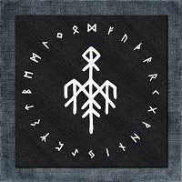

Wardruna é um grupo musical norueguês formado em 2003 por Einar Selvik junto com Gaahl e Lindy Fay Hella. Eles são dedicados a criar interpretações musicais de tradições culturais e esotéricas nórdicas, e fazem uso significativo de instrumentos históricos e tradicionais nórdicos, incluindo tambores de couro de veado , flautas , kraviklyra , tagelharpe , harpa de boca , chifre de cabra e lur. Instrumentos não tradicionais e outras fontes de som como árvores, pedras, água e tochas também são usados.
A banda lançou cinco álbuns completos, os três primeiros baseados em runas nórdicas, o quarto baseado nos ditos de Odin do Völuspá e outras fontes nórdicas antigas. O nome Wardruna significa "o guardião dos segredos" ou "ela que sussurra".
Wardruna foi formado em 2003. Selvik e Gaahl foram ambos membros anteriores do Gorgoroth , aparecendo juntos no álbum Twilight of the Idols e no DVD ao vivo Black Mass Krakow 2004. Selvik também gravou com outros projetos, incluindo Det Hedenske Folk, Bak de Syv Fjell, Jotunspor, Sahg , Dead to this World, Skuggsjá e Faun . Gaahl também gravou com Trelldom , Gaahlskagg e God Seed .
O álbum de estreia do grupo, Runaljod - Gap Var Ginnunga , foi lançado em 19 de janeiro de 2009 pela Indie Recordings , seguido por Runaljod - Yggdrasil em 15 de março de 2013.
Em 2014, Selvik anunciou na página oficial do grupo no Facebook que eles participariam da composição da trilha sonora da 2ª temporada de Vikings junto com Trevor Morris . Mais tarde, ele apareceu como ator no programa. Em 2015, Gaahl deixou Wardruna em termos amigáveis.
O terceiro álbum de Wardruna, Runaljod – Ragnarok , foi lançado em 21 de outubro de 2016. Graças em parte ao sucesso de Vikings , o álbum estreou em primeiro lugar na parada de álbuns mundiais da Billboard.
Em agosto de 2017, Wardruna encabeçou o 20º festival de música alternativa , música folclórica e música experimental Mėnuo Juodaragis em Dūburys Lake, Lituânia . No início de 2018, eles embarcaram em sua primeira turnê pela América do Norte.
O quarto álbum da banda, o acústico Skald , foi lançado em 23 de novembro de 2018.
Em outubro de 2019, Wardruna anunciou que agora assinou contrato com as grandes gravadoras Sony Music / Columbia Records e fará uma turnê europeia de março a agosto de 2020.
Em fevereiro de 2020, a banda anunciou o lançamento de seu quinto álbum de estúdio em junho de 2020. O álbum se chama Kvitravn , que significa "corvo branco". O álbum foi adiado para 22 de janeiro de 2021 devido à pandemia do COVID-19